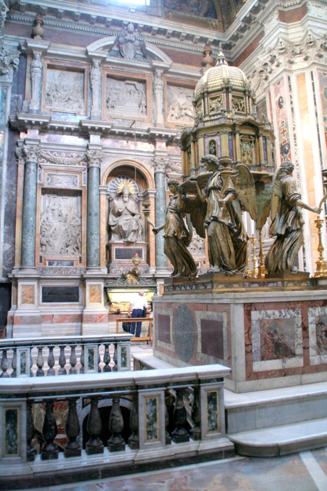
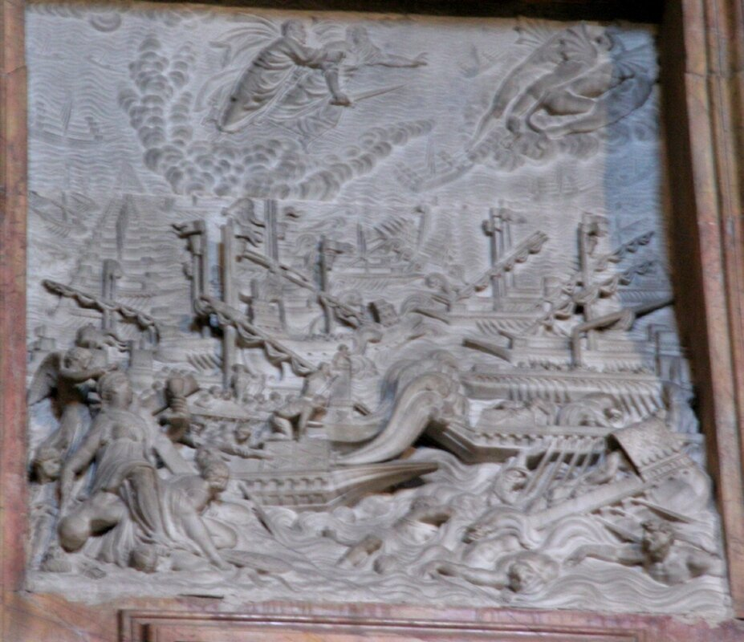
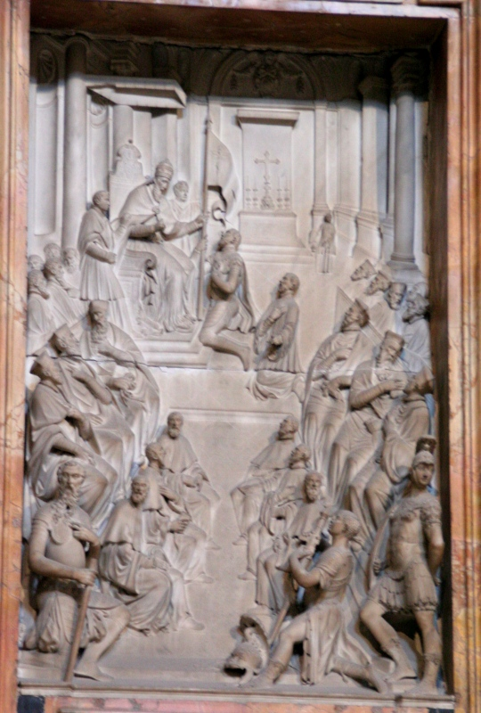
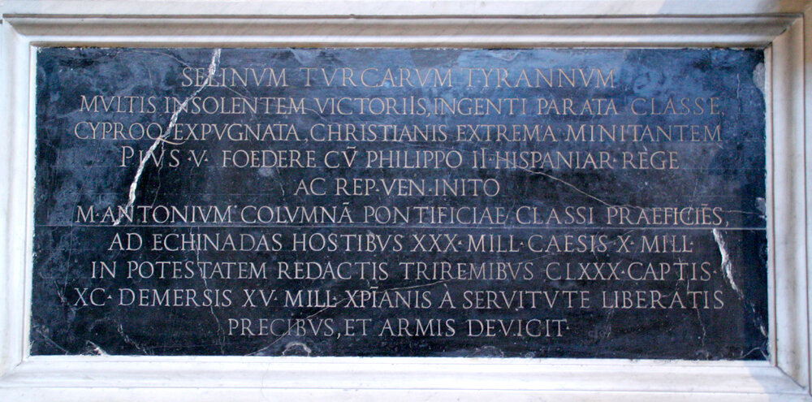
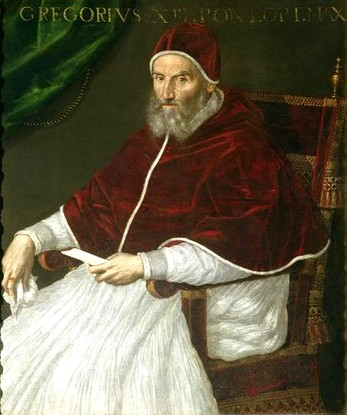
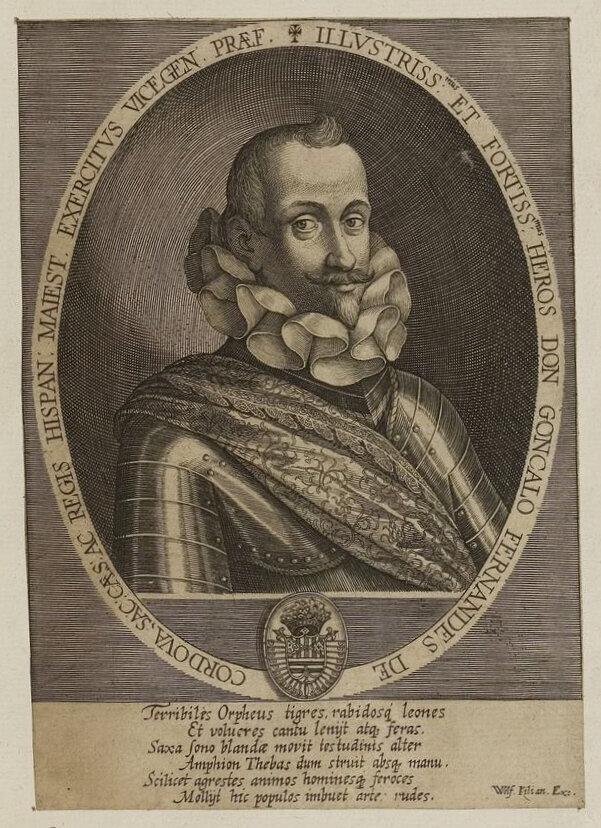

Смерть Пия V
Смерти нет ― это всем известно,
Повторять это стало пресно.
А. Ахматова. Глава первая (Поэма без героя)
Вернемся в лагерь христиан. 1 мая 1572 года умер папа Пий V. Вместе с ним ушла и та невидимая нить, которая удерживала друг возле друга членов Священной лиги.

Надгробие Пия V в базилики Санта Мария Маджоре в Риме. Фото Angelo M. Geiger
Отдельные барельефы на гробнице изображают картину сражения при Лепанто

и вручение папе знамени победы, которое несла во время сражения флагманская галера папского флота под командованием Маркантонио Колонны:

Мемориальная доска на гробнице сохраняет память о роли папы в создании Священной лиги с Испанией и Венецией и перечисляет потери, которые понесли турки в сражении при Лепанто:

Новый папа Григорий XIII, не уступая Пию в накале антиосманских заявлений, не обладал харизмой и строгостью своего предшественника.

Папа Григорий XIII. Портрет кисти Lavinia Fontana.
Заложенный Пием V фундамент священного союза христианских государств дал трещину. Каждый из бывших союзников по лиге был поглощен решением своих проблем. Филипп II готовился к военным действия с Францией, так как уже очевидной стала поддержка фламандских повстанцев французскими протестантами. Ходили слухи, что Карл IX или по крайней мере его подданные-гугеноты вот-вот пересекут границу Фландрии. Держать 20 тысяч своих бойцов в Леванте в этих условиях было непозволительной роскошью. И король 17 мая пишет Дону Хуану, находящемуся в Мессине, секретнейшее послание, в котором приказывает командующему флотом «незаметно и хитро» (con gran secreto y disimulación) отложить левантийскую операцию, продолжая вместе с тем работы по доукомплектованию флота и снабжению его продовольствием и боеприпасами. В другом своем послании, на этот раз своему послу Гранвеллу в Рим, Филипп II пишет, что в связи со смертью папы лучшим вариантом будет атаковать флотом Алжир, используя для этого созданный в рамках лиги потенциал.
Несмотря на всю скрытность, новые планы испанского короля быстро стали секретом Полишинеля. Венецианцы встревожились не на шутку и настояли, чтобы новый папа связался с испанским королем. Папа в резких тонах написал Филиппу о невозможности менять планы на кампанию 1572 года, напомнив об обязательствах Испании по договору Священной лиги. Сам папа переназначил Маркантонио Колонну капитан-генералом папского флота, после чего Великий герцог тосканский Козимо предоставил в его распоряжение одиннадцать своих галер, к которым добавил два корабля с вооружением, захваченных у турок в битве при Лепанто. Две новых галеры для флота поставил папа. Гребцами на них были захваченные в плен турки. С этой эскадрой Колонна направился на соединение с Доном Хуаном в Мессину. Туда же пошла неаполитанская эскадра под командованием Альваро де Басана в составе тридцати шести галер.
В Мессине Маркантонио Колонна встретил очень холодный прием со стороны Дона Хуана, считавшего папского адмирала верным союзником венецианцев. К концу второй недели июня в Мессину прибыл и отряд из двадцати пяти венецианских галер под командованием нового капитан-генерала Джакомо Соранцо. Основные силы венецианского флота ожидали команды на выдвижение на рейде порта Корфу. Через неделю три командующих флотами должны были направиться со своими силами на Корфу, а затем выйти в море для освобождения от турок (reconquista) Мореи и Негропонта (Эвбеи). Предполагалось, что операция эта получит поддержку восставших греков и займет пятнадцать-двадцать дней. Если объединенному христианскому флоту удастся встретить основные силы турок на море и повторить успех Лепанто, планировалось дальше направиться на Стамбул.
Но этому красивому плану не суждено было сбыться. Дон Хуан не мог покинуть Мессину без приказа короля, а такого приказа не последовало. Формальным оправданием послужил, якобы, отказ нового папы платить excusado (платеж церкви в королевскую казну Испании; мы подробно писали о нем раньше ) после смерти Пия V. Мы не знаем, было ли это на самом деле, или явилось всего лишь надуманным предлогом для отказа от выхода в море. Кроме того, Филипп приказал Дону Хуану дождаться своего нового заместителя Гонсало Фернандеса де Кордова, назначенного вместо Луиса де Рекесенса.

Гонсало Фернандеса де Кордова. Fürstlich Waldecksche Hofbibliothek [Hrsg.] Klebebände (Band 1)
И еще, Филипп заставил Дона Хуана дожидаться прибытия эскадры под командованием Джованни Андреа Дориа, флотоводческому таланту которого он очень доверял.
Филипп явно тянул время. Причины этого понятны: он хотел разобраться в истинной позиции нового папы и дождаться прояснения обстановки в Зеландии. А между тем с уходящим временем уходило и стратегическое превосходство флота христиан в Восточном Средиземноморье.
Продолжим в следующий раз.